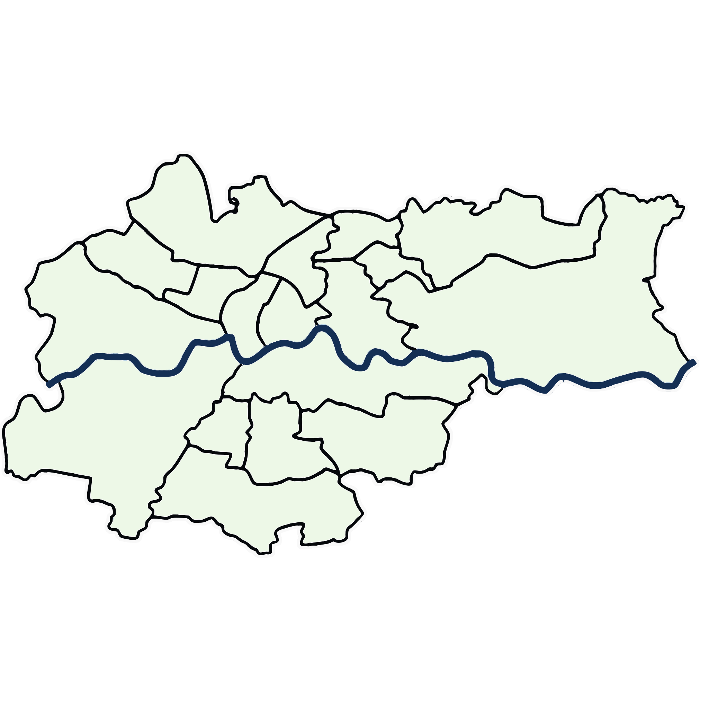
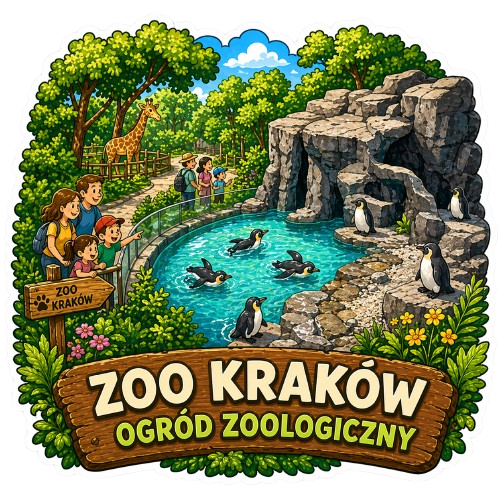
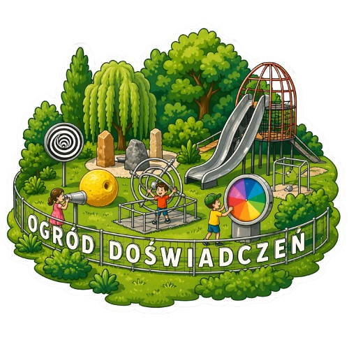
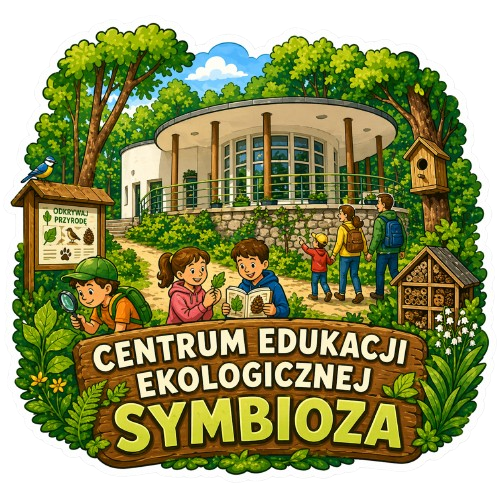
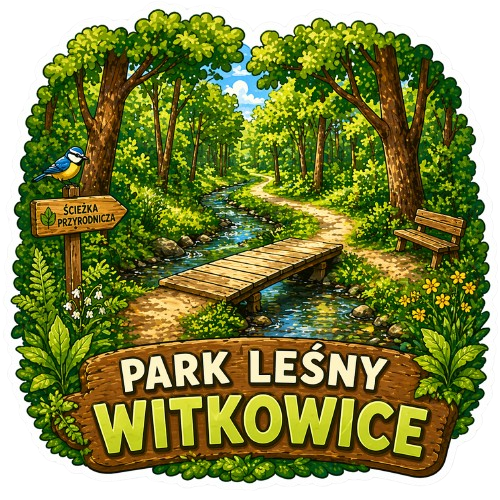
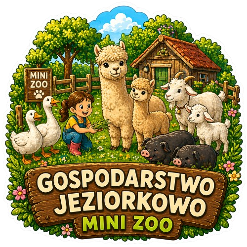
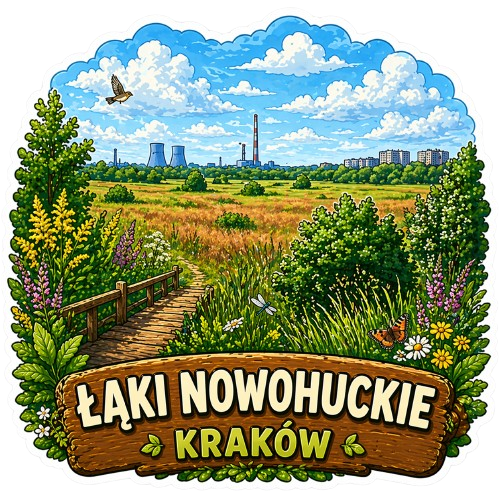

Propozycja wycieczki dla klasy
Rano
Ogród Doświadczeń albo Symbioza: warsztaty z prowadzącym.
Południe
Spacer terenowy: Las Witkowicki, Las Wolski lub Łąki Nowohuckie.
Podsumowanie
Mapa obserwacji, zdjęcia znalezisk i klasowe eko-zobowiązanie.
Informacyjna mapa Krakowa


Połączenie zajęć terenowych w Lesie Wolskim z edukacją przyrodniczą w ZOO pozwala obserwować zwierzęta, rośliny i zależności między organizmami a środowiskiem.
2-3 godz. szkoła podstawowa ZOO i las
Plenerowe centrum nauki, w którym dzieci samodzielnie eksperymentują przy ponad 100 modelach edukacyjnych z optyki, akustyki, hydrostatyki i mechaniki.
1,5-2 godz. przedszkole i klasy 1-3 eksperymenty
Centrum edukacji ekologicznej, w którym dzieci poznają las przez zabawę, obserwację i bezpośrednie doświadczanie przyrody.
1-2 godz. klasy 1-3 las i tropy
Leśne miejsce do wypoczynku i edukacji przyrodniczej ze ścieżką edukacyjną, hotelami dla owadów, szlakiem rowerowym oraz ekologicznym placem zabaw.
1,5 godz. wiosna i lato ścieżka edukacyjna
Zagroda edukacyjna, w której dzieci obserwują zwierzęta gospodarskie, karmią je pod opieką prowadzących i poznają codzienne życie na wsi.
1,5-2 godz. zwierzęta gospodarskie alpaki
Rozległy miejski obszar łąkowy, w którym dzieci mogą obserwować roślinność, owady, ptaki i znaczenie bioróżnorodności w środowisku miejskim.
1-1,5 godz. klasy 1-3 łąka, ptaki i owadyRano
Ogród Doświadczeń albo Symbioza: warsztaty z prowadzącym.
Południe
Spacer terenowy: Las Witkowicki, Las Wolski lub Łąki Nowohuckie.
Podsumowanie
Mapa obserwacji, zdjęcia znalezisk i klasowe eko-zobowiązanie.